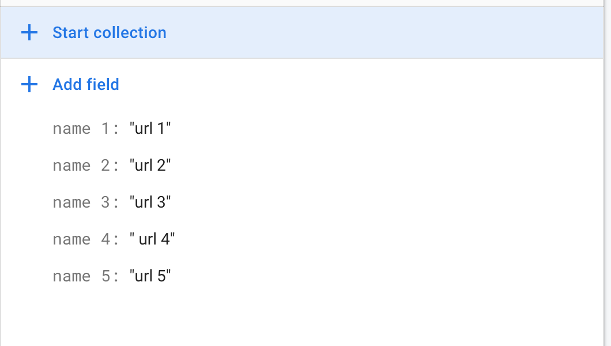

Building a stimuli table in Firebase¶
You need to create a table for your audio/video stimuli within Firebase itself (IMPT: this is not where the stimuli are stored or served, but simply where they are referenced via url). Click on the stimuli document that you created in Cloud Firestore earlier. On the right-most column, press + Add field. Under the Field category, input the name of one stimulus (IMPT: this name cannot include hyphens or slashes) and under the Value category, input the URL for that stimulus (e.g. Name: CopsDontCry, Field: https://dfhda873u.cloudfront.net/CopsDontCry.mp4). Then, press Add. Repeat this step for all stimuli used in the experiment. Your stimuli document should end up looking like this:

For information on how to best serve audio/video stimuli, see the section on serving stimuli.